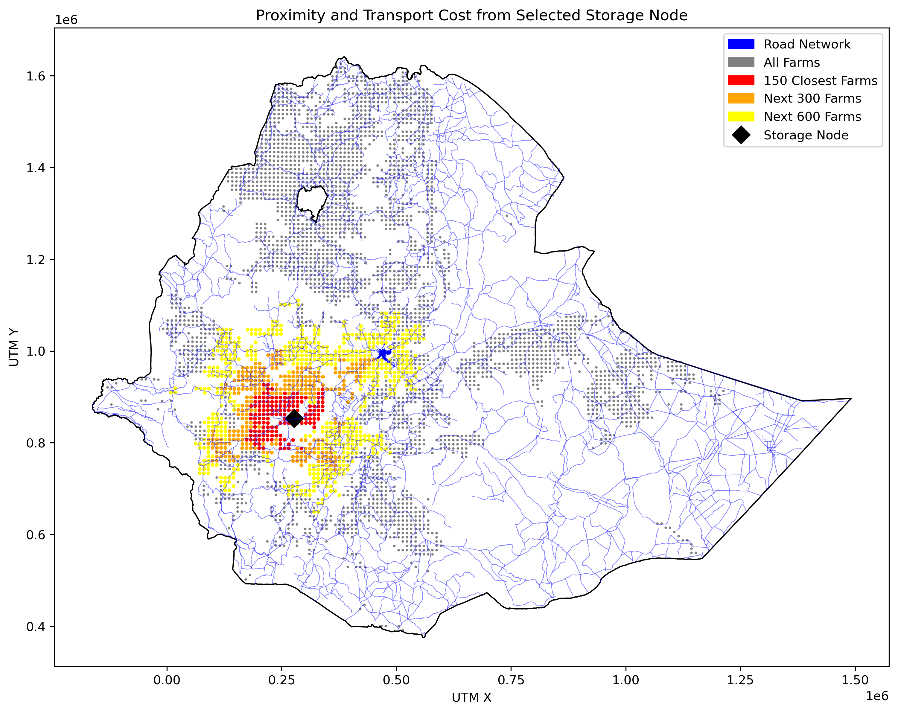
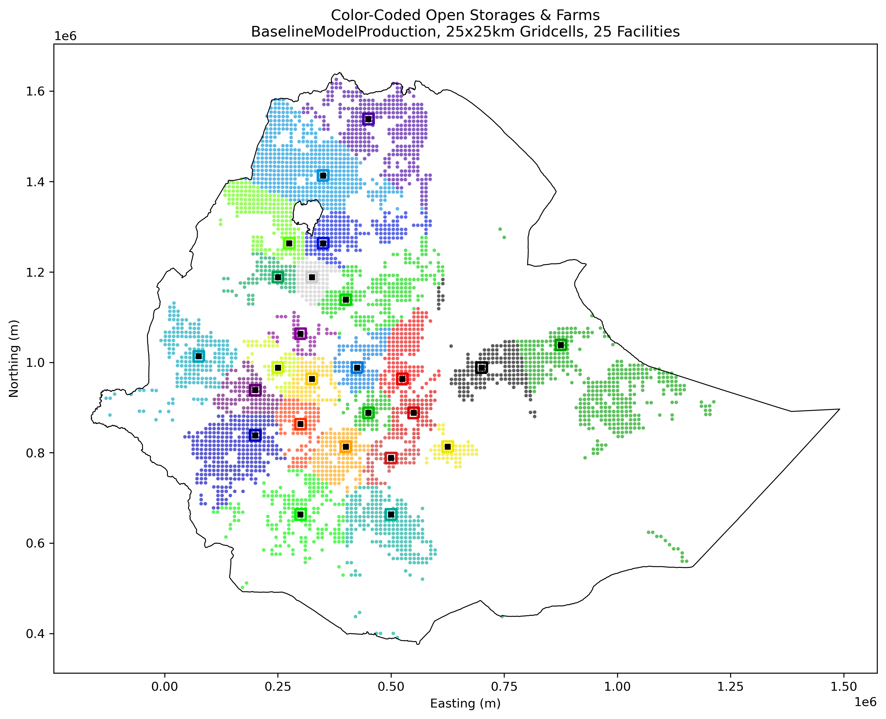
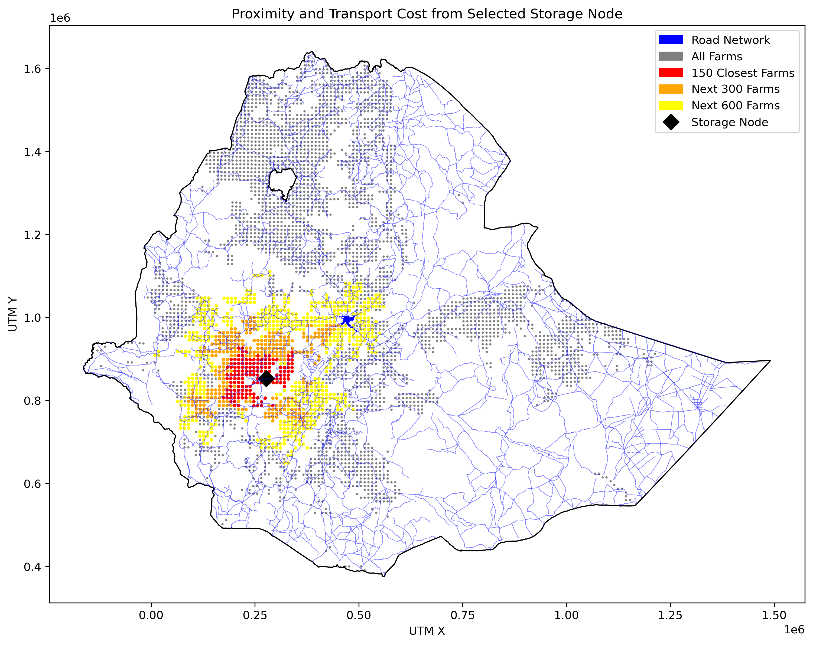
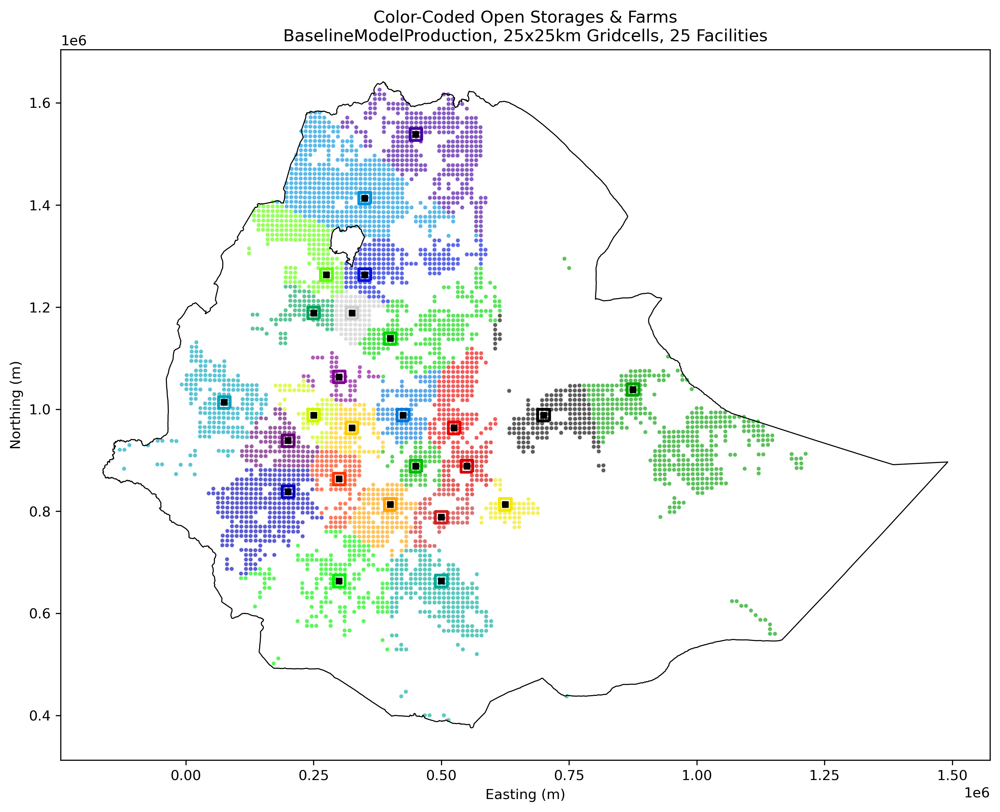

My research integrated geospatial analysis, network science, and optimization models to propose efficient storage infrastructure locations, aiming to reduce postharvest cereal losses in Ethiopia. I worked extensively with Python, using tools like GeoPandas, Rasterio, and NetworkX to clean and model spatial data, and implemented mixed-integer programming with Gurobi to solve facility location problems under real-world constraints. I then extended this model with multi-objective considerations.
 



I volunteered as a data analyst in the Coastal Oceanography Group at the UC Davis Bodega Bay Marine Lab. I processed, cleaned, and visualized archival data for physical properties of the Cordell Bank Marine Reserve.

I worked as a research assistant on this project for the HKUST finance department and managed the Python analysis for the undergraduate research group. I used Eikon, Bloomberg, yfinance API, and finnhub API to gather data on IPOs and analyze performance within the initial 3 months after IPO.
Used different types of regressors to build a model that predicts the log difference between the actual home selling price and the “Zestimate” based on characteristics that contribute to the rate of accuracy in this estimate.
I built a machine learning model with a Random Forest regressor to predict who would get the H1N1 and seasonal flu vaccines. I used one-hot-encoding and analyzed variable importance to create an accurate model. I took part in a competition with Driven Data and scored in the top 15% of competitors for accuracy.

I managed the alternative funding part of our recommendation, which looked at ways to support the living lab outside of the HKUST administration. I created the implementation strategy to get funding from alumni, the government, and existing PE partnerships with the entrepreneurship center.

This case study focused on the fintech industry, with our target demographic being Gen Z in Hong Kong. This was presented for the Information Systems course at HKUST.

My team was a finalist in the World Bachelor in Business case competition. I managed the implementation strategy for our recommendation to re-structure the “experience” for guests by creating clear themes and a recommended path through the park.

My team presented a strategy to increase market share in the China EV market. This was done by capitalizing on the established Toyota brand, increasing sustainability, and creating a digitization initiative.